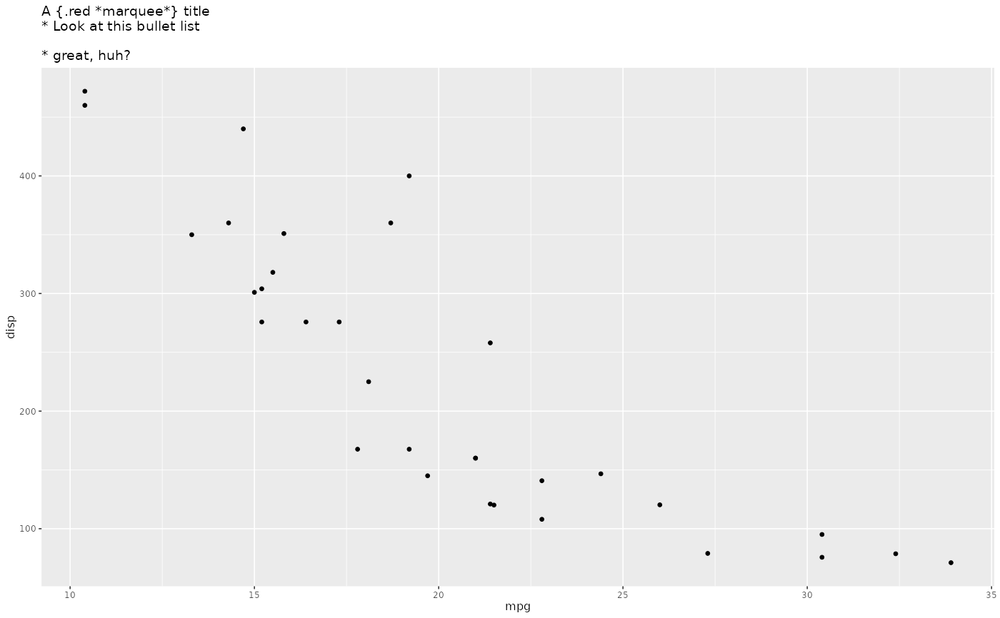

This theme element is a drop-in replacement for ggplot2::element_text(). It
works by integrating the various style settings of the element into the base
style of the provided style set. If a margin is given, it is set on the body
tag with skip_inherit(). The default width is NA meaning that it will
span as long as the given text is, doing no line wrapping. You can set it to
any unit to make it fit within a specific width. However, this may not work
as expected with rotated text (you may get lucky). Note that you may see
small shifts in the visuals when going from element_text() to
element_marquee() as size reporting may differ between the two elements.
Usage
element_marquee(
family = NULL,
colour = NULL,
size = NULL,
hjust = NULL,
vjust = NULL,
angle = NULL,
lineheight = NULL,
color = NULL,
margin = NULL,
style = NULL,
width = NULL,
inherit.blank = FALSE
)Arguments
- family
The font family of the base style
- colour, color
The font colour of the base style
- size
The font size of the base style
- hjust
Horizontal justification (in \([0, 1]\))
- vjust
Vertical justification (in \([0, 1]\))
- angle
Angle (in \([0, 360]\))
- lineheight
The lineheight of the base style
- margin
The margin for the body tag. As margins in
element_text()doesn't rotate along withanglewe follow this behavior here as well so that the right margin becomes the bottom margin when rotating the text 90 degrees and so forth.- style
A style set to base the rendering on
- width
The maximum width of the text. See the description for some caveats for this
- inherit.blank
Should this element inherit the existence of an
element_blankamong its parents? IfTRUEthe existence of a blank element among its parents will cause this element to be blank as well. IfFALSEany blank parent element will be ignored when calculating final element state.
Value
An element_marquee object that can be used in place of
element_text in ggplot2 theme specifications
Note
grid, which marquee, ggplot2, etc are build upon contains a bug that
means that the height of a grob is calculated before the grob knows it's
width. The result of this is that if the width of an element_marquee() is
NULL (the default), the text may overflow its allocated space with an
additional line. Unfortunately there is no great fix for this, other than
eyeball the width it has available and pass that to the element (e.g.
element_marquee(width = grid::unit(10, "cm")))
Examples
library(ggplot2)
p <- ggplot(mtcars) +
geom_point(aes(mpg, disp)) +
labs(title = "A {.red *marquee*} title\n* Look at this bullet list\n\n* great, huh?") +
theme_gray(base_size = 6) +
theme(title = element_marquee())
plot(p)
#> Error in rbind(deparse.level, ...): numbers of columns of arguments do not match
ggplot(mtcars) +
geom_histogram(aes(x = mpg)) +
labs(title =
"I put a plot in your title so you can plot while you title

What more could you _possibly_ want?") +
theme(title = element_marquee())
#> `stat_bin()` using `bins = 30`. Pick better value with `binwidth`.
